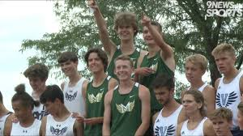

Over the summer we welcomed a bunch of new kids to the team and showed them the team culture that we have worked hard to build. We trained hard and I looked for colleges to attend. I was moving in the right directions with my times, however, it was still a battle for spots on Varsity and my times were just dropping a couple of seconds at a time. Throughout the season we were going back and forth with Valor being ranked 1 and 2 in 5A. We went into State being ranked 2nd and all of us were determined to walk away with another trophy and make it 7 total titles for the guys team. During the race I was working with my teammate Luke Urban and in the final quarter mile we moved up together and passed 2 valor kids and helped win the meet by 1 point. I ran 16:40 in 21st place. Next was NXR where the course was long but I ran 16:15 which converted to a 15:45. My last XC meet of high school was RunningLane National Championships. After last year's success and many donors, the meet became the new nationals and hosted the fastest teams in the nation. We placed 10th as a team and I ran 15:37 a new PR. I was happy to run a PR and finish my high school XC career with my friends on a great day.
I trained over the winter and made big leaps in my training. While in Colorado I didn't run as fast as last year, I was able to run a mile in Texas in 4:24. I am super happy with this time but I am ready to keep dropping it. I have run 2:01 for the 800 a few times and I am looking forward to being the 3rd leg on the 4x8 team at the State meet this year.My search for colleges went well and I committed to run Cross Country and Track at Missouri S&T this fall. I am so blessed to have such a great experince with running and couldn't be happier competing in Division 2 next year. (My friend Luke Urban committed to Southwest Baptist about an hour away from Missouri S&T and we will be racing each other a lot!)
